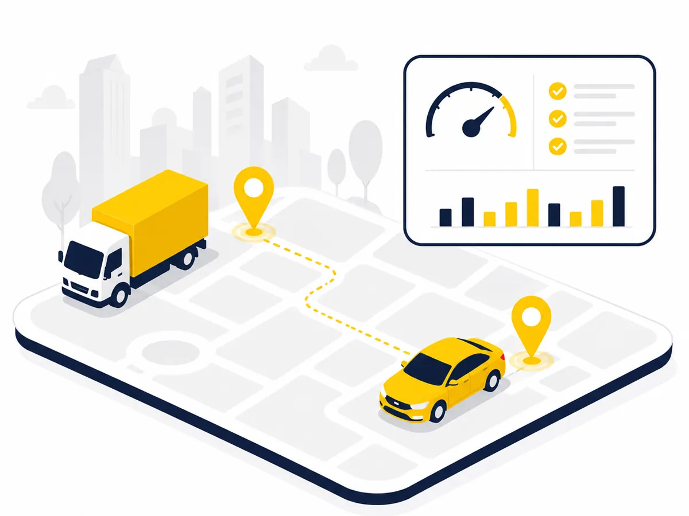

In production2026 · OpenDevelopment
Open T fleet platform
Internal transport management for a trucking company: vehicles, drivers, dispatch, fuel, inspections, maintenance and reporting, as one API with two clients.
- API: Node and Express on MongoDB, 24 route groups, Socket.IO live tracking with a REST polling fallback, scheduled reports and expiry reminders.
- Admin console: Next.js 16 and React 19 with Leaflet maps and Recharts, covering dispatch, rigs, owner-operators, repairs and printable handover acts.
- Driver app: Flutter with Riverpod, shifts, jobs, fuel entries, documents and notifications.
- Citizen identity and vehicle registry lookups through Mongolia's DAN OAuth service, with phone OTP for privileged roles.
